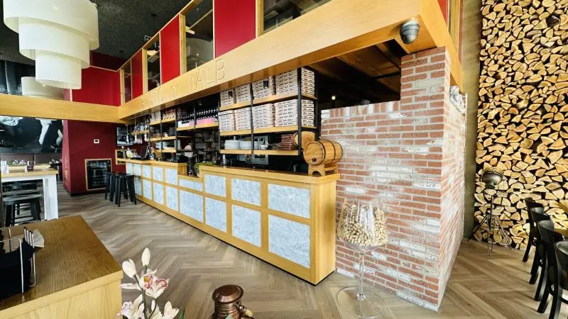
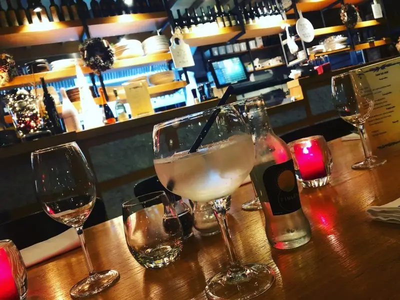
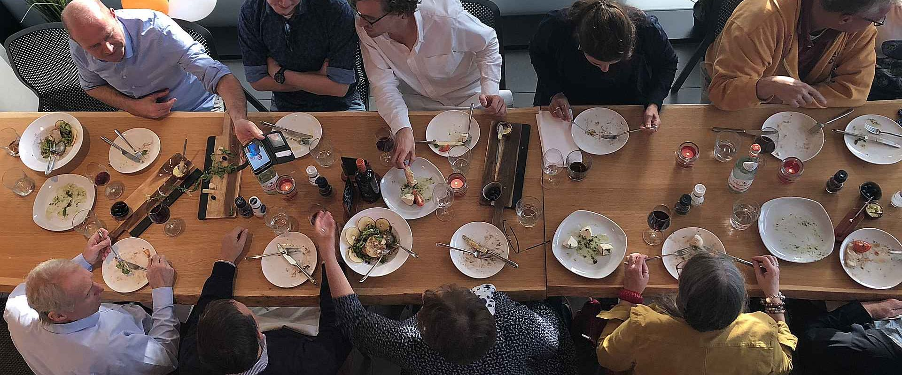
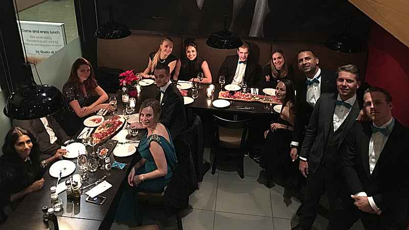
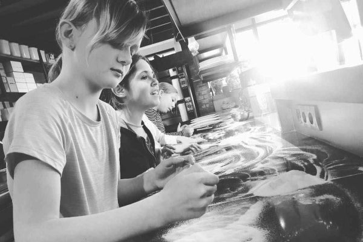

Zelfstandig kok
U draait zelfstandig de keuken en bereidt dagelijks pasta's, pizza's, vlees- en visgerechten met verse ingrediënten. Overzicht, oog voor kwaliteit en ervaring als zelfstandig kok zijn belangrijk.
Reageer via info@gustodiitalb.nl
Italiaans restaurant in Ypenburg, Den Haag
Huisgemaakte pasta, ambachtelijke pizza's, verse salades, vlees en vis. Elke dag met verse ingrediënten, met aandacht bereid.
Kerstavond 24 december Viergangen kerstmenu, € 85 p.p. Reserveren vereist.Dinsdag t/m zondag 16:00 – 22:00 Keuken tot 21:00, maandag gesloten
Bij Gusto di ItALB draait alles om de liefde voor de Italiaanse keuken. Van huisgemaakte pasta en ambachtelijke pizza's tot verse salades, vlees en vis: we werken met mooie, verse ingrediënten en bereiden onze gerechten met aandacht en passie.
Geniet van een ontspannen avond met authentieke Italiaanse smaken, een zorgvuldig geselecteerde wijn en de warme sfeer van Italië. Neem plaats in ons restaurant of op het terras.


Kerstavond, donderdag 24 december 2026
€ 85 per persoon, inclusief een glas Prosecco bij aankomst
Reserveren is vereist en het aantal plaatsen is beperkt. Boek uw tafel op tijd.
Reserveer voor kerstavondRomige paddenstoelensoep met truffeltapenade en knapperig brood. Voor iedereen.
Vitello Tonnato: dun gesneden kalfsvlees met romige tonijnsaus, kappertjes en extra vierge olijfolie.
Gamberoni all'Aglio: gamba's in knoflookboter met witte wijn, citroen, peterselie en geroosterd brood.
Caprese con Burrata: burrata, zoete cherrytomaten, basilicumpesto en crostini.
Filetto di Vitello al Gorgonzola: kalfsfilet met Gorgonzolasaus, aardappelpuree en hazelnoten.
Branzino al Limone: zeebaars met citroenbotersaus, seizoensgroenten en geroosterde aardappelen.
Risotto ai Funghi e Tartufo: paddenstoelen, Parmigiano Reggiano en truffel. Vegetarisch.
Panettone della Vigilia: met mascarponecrème en pistachesaus.
Cannoli Siciliani: ricotta, pistache en chocolade.
Tortino al Cioccolato: warm chocoladetaartje met vloeibare kern en vanille-ijs.
Onze volledige menukaart. Heeft u een allergie? Neem dan contact met ons op voor allergeneninformatie.
Versgebakken schiacciata met verse rucola, Parmezaanse 'sneeuwvlokken' en gemarineerde olijven. Licht en smaakvol, ideaal om uw Italiaanse diner mee te beginnen.
Geroosterd rustiek brood met onze huisgemaakte pesto Genovese en Parmigiano-sneeuwvlokken. Simpel, vers en boordevol smaak.
Knapperig huisgemaakt geroosterd brood met verse, sappige tomaten en geurige basilicum, afgewerkt met extra vierge olijfolie en knoflook.
Dun gesneden rundercarpaccio met verse rucola, truffelmayonaise en fijne Parmezaanse 'sneeuwvlokken'.
Een selectie van Italiaanse fijne vleeswaren en kazen met gemarineerde olijven. Met zorg samengesteld, ideaal om te delen.
Buffelmozzarella, verse tomaten gemarineerd in knoflook en basilicum, dun gesneden Parmaham en verse rucola.
Rijpe tomaten, romige buffelmozzarella en verse basilicum, met een pestodressing en een scheutje extra vierge olijfolie.
Salade met geitenkaas, knapperige walnoten, zoete appelpartjes en een honing-balsamicodressing.
Salade met tonijn, pittige rucola, rijpe tomaten, olijven, verse basilicum en knapperige ui.
Cannelloni gevuld met ricotta en spinazie, uit de oven in tomatensaus, met mozzarella en Parmigiano Reggiano.
Paccheri met Italiaanse salsiccia, champignons, truffelroom en Parmigiano Reggiano.
Paccheri in een romige truffelsaus met guanciale en Parmigiano Reggiano.
Verse ravioli gevuld met ricotta en spinazie, met beurre noisette, verse salie en Parmigiano Reggiano.
Spaghetti met zelfgemaakte pesto Genovese van verse basilicum, pijnboompitten, Parmezaanse kaas en olijfolie, met sappige garnalen.
Pittige saus van guanciale (Italiaans varkenswangvlees), tomaat, rode chilipeper en pecorino. Een klassieker uit Lazio.
Langzaam gegaarde ragù van rundergehakt, tomaten, ui, wortel en selderij, met een vleugje Parmezaanse kaas.
Romige saus van eidooier, Parmezaanse kaas, pecorino en krokant gebakken pancetta. Traditioneel bereid, zonder room.
Verse tagliatelle met romige truffelsaus, champignons, malse stukjes ossenhaas en versgeraspte Parmezaanse kaas.
Romige risotto met sappige garnalen en truffel, op smaak gebracht met Parmezaanse kaas en een vleugje witte wijn.
Dunne, krokante bodem met huisgemaakte tomatensaus, mozzarella fior di latte, verse basilicum en extra vergine olijfolie.
Tomatensaus, romige mozzarella en verse champignons, met olijfolie en een subtiele hint van knoflook.
Huisgemaakte tomatensaus, mozzarella fior di latte en milde Milano-salami.
Romige saus van gemengde paddenstoelen, langzaam gegaarde kip en goudbruin gebakken kastanjechampignons.
Huisgemaakte tomatensaus, fior di latte en dunne plakjes salame piccante uit Calabrië.
Dunne bodem met gemarineerde tomaten in knoflook en basilicum, buffelmozzarella, zeezout en extra vergine olijfolie.
Gevouwen pizza met tomatensaus, mozzarella, salami, verse champignons en Italiaanse ham, goudbruin gebakken in de steenoven.
Huisgemaakte tomatensaus en mozzarella met fijne Italiaanse ham en verse champignons.
Vier kazen: mozzarella fior di latte, gorgonzola, Parmigiano Reggiano en fontina.
Tomatensaus en mozzarella, in vier delen met champignons, Italiaanse ham, artisjokken en salami.
Tomatensaus, fior di latte, champignons en kruidige stukjes salsiccia (verse worst).
Tomatensaus en fior di latte, met gegrilde seizoensgroenten en zachte geitenkaas.
Rijke tomatensaus, mozzarella, zilte ansjovis en kappertjes, met extra vergine olijfolie.
Huisgemaakte tomatensaus en mozzarella met tonijn, kappertjes, rode ui en zwarte olijven.
Rijke tomatensaus, fior di latte, pittige salami uit Calabrië, gorgonzola en zoete rode ui.
Tomatensaus en fior di latte met flinterdunne Parmaham, truffelmayonaise, Parmigiano Reggiano en verse tomaten.
Tomatensaus en mozzarella met rundercarpaccio, verse rucola, truffelmayonaise en Parmezaanse 'sneeuwvlokken'.
Witte pizza met fior di latte, mortadella, romige burrata, pistachecrème en verse basilicum.
Gegrilde Zuid-Amerikaanse ribeye van 220 gram, rosé vanbinnen, in plakjes op verse rucola met Parmigiano Reggiano, grove zeezoutvlokken en gerijpte balsamico.
Malse ossenhaas omwikkeld met Prosciutto di Parma, met een saus van gemengde paddenstoelen, room en truffelolie, en geroosterde aardappelen uit de oven.
Dunne kalfslapjes met Prosciutto di Parma en verse salie in een wittewijn-botersaus, met geroosterde aardappelen uit de oven.
Vraag onze ober naar de verse vangst van vandaag, bereid met seizoensingrediënten en geserveerd met bijpassende bijgerechten.
Laagjes lange vingers gedrenkt in espresso, romige mascarpone en een vleugje cacao.
Warme chocoladesoufflé met een gesmolten kern en romig vanille-ijs.
Cheesecake met frambozensorbet, verse frambozen en bramen.
Drie bolletjes huisgemaakte gelato: chocolade, vanille en aardbei.
Een selectie van kazen met huisgemaakte vijgenjam.

Prijzen in euro's. Thuis eten? Bestel online

De bovenverdieping is geschikt voor groepen tot 30 personen: een sfeervolle, flexibele ruimte voor particuliere en zakelijke bijeenkomsten.
Overdag is de ruimte ideaal voor vergaderingen, presentaties, trainingen en bedrijfssessies. Ook voor verjaardagen, borrels, bedrijfsborrels, kraamfeesten en andere bijzondere gelegenheden zijn er mogelijkheden. Voor grotere gezelschappen reserveren we de volledige zaak voor u, met passende catering en arrangementen als u dat wilt.
Heeft u een bijeenkomst in gedachten? We denken graag met u mee.
Vraag naar de mogelijkheden


Leer stap voor stap zelf pizza maken, van deeg tot gebakken pizza. Overdag, vanaf 12:00.
Perfect voor kinderfeestjes, maar ook voor families, vriendengroepen, volwassenen en bedrijfsuitjes.
€ 25 per kind
Vanaf 6 jaar, minimaal 10 en maximaal 20 kinderen. Inclusief pizza en één drankje.
Dessert (ijs) erbij: € 5,50 p.p.
vanaf € 40 p.p.
Afhankelijk van uw wensen en het arrangement.
Reserveer hier, of bel ons op 015 - 2155 338. Voor groepen en kerstavond helpen we u graag persoonlijk.
Bij ons vieren we de echte Italiaanse keuken: elke dag verse vis, pasta's die echt huisgemaakt zijn en een grote selectie kwaliteitswijnen.
U draait zelfstandig de keuken en bereidt dagelijks pasta's, pizza's, vlees- en visgerechten met verse ingrediënten. Overzicht, oog voor kwaliteit en ervaring als zelfstandig kok zijn belangrijk.
Reageer via info@gustodiitalb.nlWe zoeken ook versterking in de bediening. Vraag naar de details.
Reageer via info@gustodiitalb.nlWe zitten in de Haagse wijk Gooland, tegenover de Plas van Reef en Pathé Ypenburg.
De keuken sluit om 21:00 uur.
Tram 19 stopt direct voor de deur. Station Den Haag Ypenburg ligt op loopafstand.
Via de A12 neemt u afslag 5, Nootdorp. Vanaf daar bent u snel bij ons.